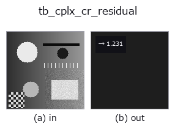

typed op• Data kinds: cimage → feature
• Call: fullseye.apply(img, "tb_cplx_cr_residual", a=0.5, b=0.5) (the 2-D model is one image plus two scalar knobs a,b∈[0,1])

*The figure is the actual output on a synthetic 128×128 input. Left: input, right: output. Point clouds are drawn as a top-down scatter (brightness = z), 1-D series as a line plot, volumes as the maximum-intensity projection along z, videos as the middle frame, complex images as magnitude; return values that are not pictures are shown as the values themselves.*
*Knob a does not change the output (measured: identical at 0.1 / 0.5 / 0.9).*
*Knob b does not change the output (measured: identical at 0.1 / 0.5 / 0.9).*
Stages (the ops that come before → this op, left to right):
▸ tb_cplx_cr_residual: stages (docs site)
Cauchy-Riemann residual of a sampled complex field — "is this field holomorphic?" as a number.
With `f = u + i v` sampled on a uniform grid, holomorphy means
`u_x = v_y and u_y = -v_x` (Cauchy-Riemann). This returns the
relative residual `max(|u_x - v_y|, |u_y + v_x|) / max|grad|`
(central differences, `numpy.gradient): 0` = the samples satisfy CR to
the discretisation limit, `2` = the field is the conjugate of a
holomorphic one (`conj(z)` gives exactly 2), values in between = partly
analytic or noisy.
Grid convention (it decides the sign of the answer): `f[i, j]` is the
field at `z = x0 + j*spacing + i*spacing*1j` — rows index the *increasing
imaginary* axis, columns the real axis. Image arrays usually run rows
*downward*; feeding one directly measures the conjugate field, whose
residual is `2, not 0. Flip rows (f[::-1]`) to use image data.
Discretisation, honestly: central differences are exact for polynomials of
degree <= 2, so `f = z**2` returns exactly 0; for higher order the
residual floors at `O(h^2 * |f'''|) (measured: f = z**3` on a
`[-1,1]^2 grid returns 1.7e-3 at h` and 4.2e-4 at
`h/2` — a factor 4.00, the expected second order). Read a
small value as "consistent with holomorphic at this resolution", never as
proof.
A constant field returns `0.0 (it is holomorphic; the 0/0` of the
normalisation is resolved by that limit, and stated here rather than left
to numpy).
Raises `ValueError`: not a 2-D array, either dimension below 3 (no
central difference exists), non-finite/masked input, over-cap size,
non-finite or non-positive *spacing*.
HALCON: no operator (`derivate_gauss` supplies the real-valued
derivatives one would build this from).
Typed bridge of the math op `cplx_cr_residual into the 2-D evolution registry: the same implementation, called under the op(v, a, b) convention. a drives spacing (default 1); b` is unused.
• Sample-data catalog (download URLs / licences) — 2-D uses skimage.data (BSD/public domain) plus synthetic images; 3-D lists download URLs for real data sources (Stanford, PDS, …).
• Operator provenance and references — the sources of the research/methods this op family came from.
The program below has been verified to run (same input as the figure). In Studio's help this block becomes buttons that load and run it on the spot.
img_to_cimage 0.50 0.50 tb_cplx_cr_residual 0.50 0.50
▸ Load this pipeline · Load & run
The examples below call the underlying ledger op cplx_cr_residual. This bridge op is the same implementation adapted to the fn(v, a, b) convention, so the behaviour carries over unchanged (only the call form differs).
• math_complex — py -3.11 examples/math_complex.py
feature as input)typed)tb_points_to_voxel · tb_estimate_point_normals · tb_iss_keypoints · tb_project_points · tb_render_point_depth · tb_statistical_outlier_removal · tb_radius_outlier_removal · tb_voxel_grid_downsample
*Provenance: ops.py — 2D operator registry. This per-op note is generated by tools/opdocs.py md (do not hand-edit).*
© 2026 Kazufumi Furuse — Fullseye operator documentation. Licensed under Apache-2.0.
{kind=link}